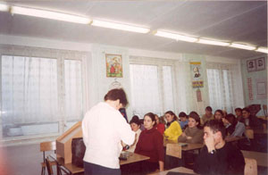
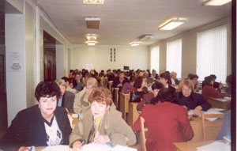
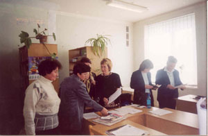
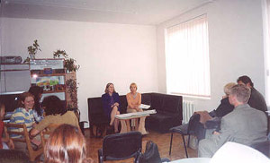

|
|
News Archives
- 17-21.11.03. International Studies Sessions held
at the Center
17-21.11.03. At the Center were held a series of sessions over
the course of several weeks on the subject of International
Studies. The highlight of the sessions was a two day viewing
on "How to Study", "Studying in the USA",
and "Real Stuff". As a result of the activities the
participants have exhibited an enlarged interest in the subjects
covered. |
 |
- 3-4.11.03. English Teaching Conference lead by Peace
Corps Volunteer Mark Dann
At the center was held a two-day conference, organized by Peace
Corps volunteer Mark Dann. 60 teachers of English language from
schools in the Simferopol region took part in the conference.
At conference teachers have been acquainted with new methods
of teaching of English language and communicative approaches
in training have been shown.
|


|
- 21.10.03 The center has been hosting a cycle of
meetings with Katrin Sherri on the theme “ How to save money
and from money make money."
|

|
- 15.10.03. "Plan and Strategy of Development
of Business for your Professional Work" business meeting
The center organized a meeting with the Expert on Business
George Adumbi who had read lecture on a theme: " the Business
- plan and strategy of development of business for your professional
work ". The audience had an opportunity to get acquainted
with the basic ideas about creation of own affair, and also
development of private(individual) business. Silvia Stein and
Katrin SHerry have added lecture by examples from own experience
that has allowed to expand subjects of lecture and to increase
interest of students which were made mostly by students and
teachers of economic branch of university. |
|
- 7.10.03. TOEFL presentation by Patricia Sullivan
Presentation by Patricia Sullivan the purpose which was acquaintance
with the basic requirements and innovations of the International
examination on English language as foreign TOEFL has passed.
On presentation there were teachers and students of high schools
and schools of of Simferopol, and also representatives of local
press. Patricia Sullivan has explained specificity of examination
TOEFL, the basic requirements and nuances, rules of delivery,
and also has given a number of recommendations on preparation
for this complex examination and has shown separate
|
 |
- 29.09.03. IREX Training Seminar
Students and teachers, and also all interested people have
been invited to seminar-training.
The seminar was lead by Andrea Kolan- the director of academic
programs IREX. More detailed information on programs of the
international exchanges has been presented to an audience. This
programms are administered by IREX. There was a practical training
on filling application for participation in programs .
Also some questions of direct carrying out of scientific research
and persuing education at typical American university, residing
and adaptation in the American society are considered.
|
|
|
- 15.09.03. Cultural Press Conference
Press conference with the press attache on culture Liz Heller
has taken place.
Press conference has been devoted to announcing of a new season
of annual American programs on an exchange for promote scholarship
in America. On presentation there were 15 representatives of
local press, and also students and teachers of our university
and of Simferopol.
|
 |
- 12.09.03. Round Table Discussion
The Round table devoted to the 10-anniversary of university
was conducted. The round table’s topic was - The Role of higher
education in America and Ukraine. There were 15 participants
in the discussion. The round table has been conducted completely
in English, that promoted close contact and mutual understanding
of participants which were mostly students and teachers . Invited
to the round table as guests were Charles Crowther, Silvia Stein,Leanne
Stephenson.Heated discussion were about the opportunity and
necessity of pursueing high education in Ukraine and in America,
about the difficulties in education, and the influence of the
prejudice on high education.
|
|
Back to Top
|